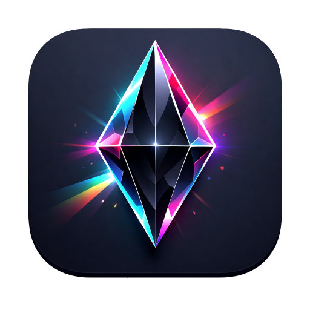
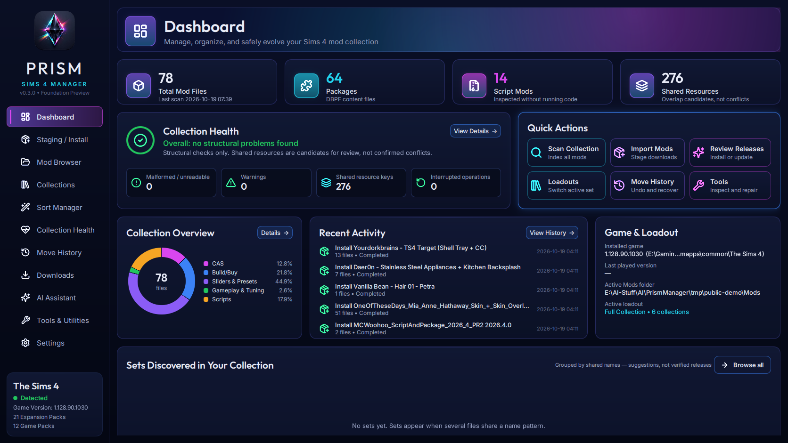
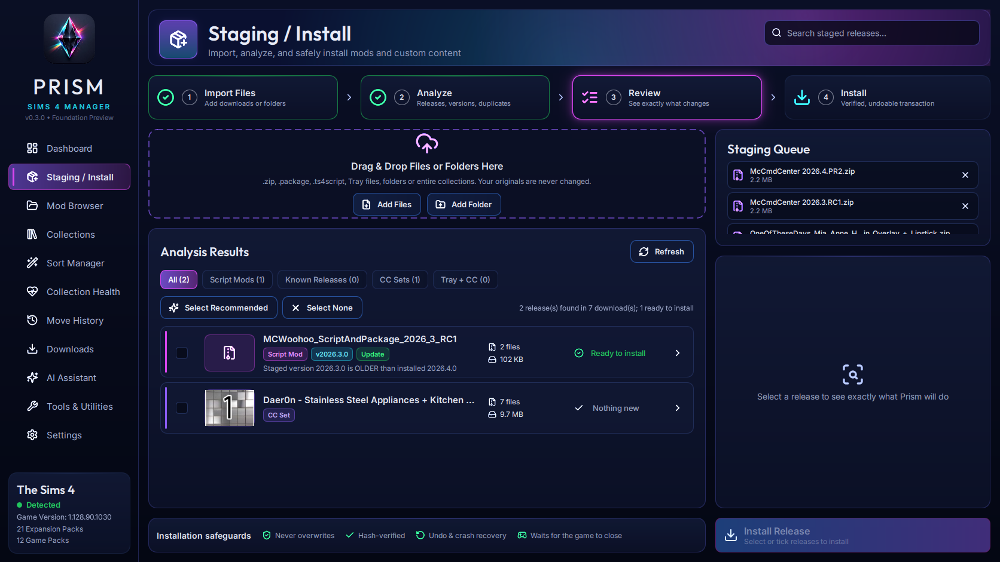

A free, open-source home for your Sims 4 mods and custom content: beautiful to browse, careful with every file, and honest about what it knows.

Prism treats your Mods folder like it matters. Nothing moves until you've seen exactly what will happen.
Downloads are copied into an isolated staging area. Your originals are never touched.
Releases, versions, duplicates and replacements are found from inside the packages.
See exactly which files move and what gets replaced, before you approve anything.
One recoverable transaction, safe after crashes or power loss. Undo it any time from Move History.
Tested every day on a real collection of more than 43,000 files.
One screen, plain language: what's wrong with your collection, most important first, each with one fix button. Every fix can be undone.
Take problem files out of the game without deleting them, keep the reason, and put them back any time. Only you can delete, and deleted files go to the Recycle Bin.
Prism reads what's inside each package (resource types, CAS body types, embedded previews, script versions), so a "hair" file that's really a hat is filed as a hat.
A fast visual gallery of everything you have installed, with real thumbnails, categories, folders, suggested sets and per-file details.
Group related content, then switch between gameplay loadouts in one undoable step. Nothing is ever deleted.
Organization driven by package contents. Named sets, script releases and overrides stay together, and every move can be undone.
Find files the game won't load, resources several mods compete for, and the installed mods named in your exception reports.
Byte-identical copies, confirmed with SHA-256. Extra copies move to a vault, never straight to deletion.
Frameworks your scripts import, mods and packs creators declare as required, and missing meshes. Each comes with its official source, and Prism gets it for you where the site allows.
A script mod broke after a game update? Prism finds out why and gets a small, separate, safety-checked fix written, which you install with one approval and can undo any time.
Seating, lighting, plumbing, decor: Build/Buy folders follow the game's own catalog categories, read from inside each object.

Screenshots show a small demo collection. Custom content shown belongs to its creators.
Prism records the site and page behind each download, carries it into the installed mod, and checks those sources for newer files where the site allows it. It follows each site's rules: no bypassing logins, captchas, paywalls or early access.
AI is optional. The assistant answers questions about your real collection; agents and stronger models can draft Mod Doctor fixes.
Prism runs on Windows (Python with Qt Quick). The code will be published here, under the GPL, with the first public release.
Prism is free software under the GNU General Public License v3.0 or later. Copies and modified versions must keep the attribution “Based on Prism Sims 4 Manager by ArchAngelAries and Prism contributors.” Questions, ideas and feedback are welcome on GitHub Issues.